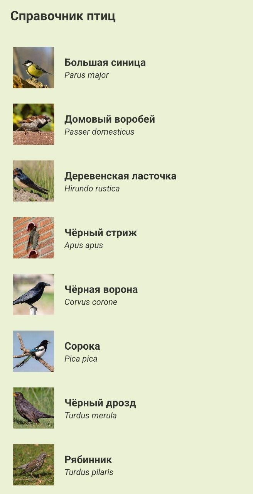
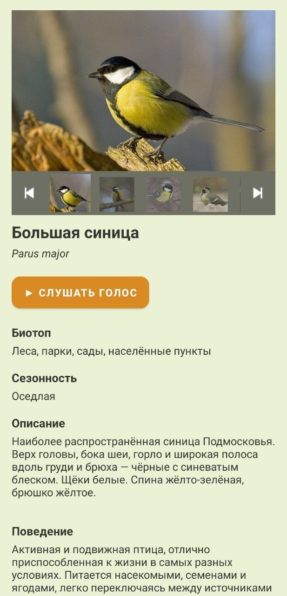

← Все проекты


О проекте
Мобильное приложение-справочник для идентификации птиц Московской области с социальными функциями. Пользователи могут листать карточки 20 видов птиц с фотогалереей и голосами, фиксировать собственные наблюдения с геопривязкой на карте и публиковать их в общую ленту сообщества.
Технологии
Java, Android SDK (minSdk 29), Firebase Authentication, Cloud Firestore, OSMDroid (OpenStreetMap), ViewPager2, RecyclerView.
Что реализовано
- Офлайн-справочник на основе локального JSON с кастомным парсером
- Карусель фотографий с полоской превью и синхронизацией
- Аутентификация по email/паролю с разделением ролей (пользователь / администратор)
- Создание заметок с автодополнением названия птицы и интерактивной картой
- Лента опубликованных наблюдений сообщества
- Панель администратора с модерацией публикаций
Чему научилась
- Проектирование клиент-серверной архитектуры по паттерну MVC
- Работа с NoSQL базой данных (Firestore): составные индексы, правила безопасности, разграничение доступа по ролям
- Построение адаптеров RecyclerView с паттерном ViewHolder
- Интеграция сторонних карт (OSMDroid) как альтернатива Google Maps SDK
- Полный цикл разработки: от технического задания и IDEF0/DFD диаграмм до тестирования прототипа